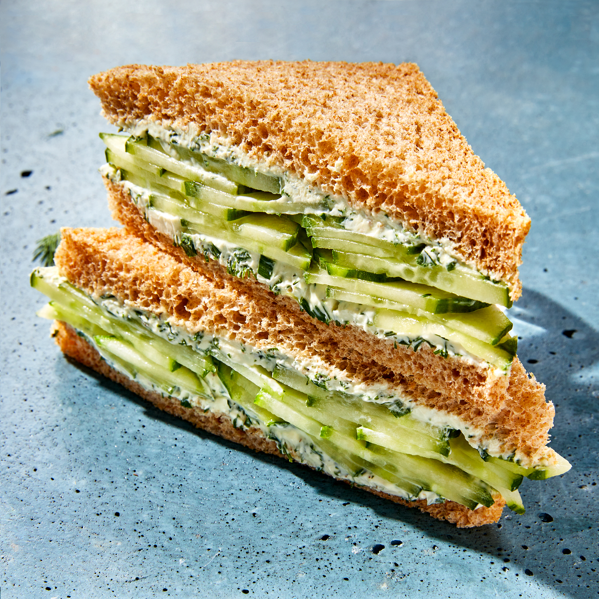

Cucumber sandwich

Ingredients
- 2 ounces cream cheese, at room temperature
- 1 tablespoon low-fat plain Greek yogurt
- 1 tablespoon sliced fresh chives
- 1 tablespoon chopped fresh dill
- ¼ teaspoon ground pepper
- 2 slices whole-wheat sandwich bread
- ⅓ cup thinly sliced English cucumber
Directions
- Stir cream cheese, yogurt, chives, dill and pepper together in a small bowl until well blended.
- Spread the mixture evenly on one side of each bread slice.
- Top 1 slice with cucumber slices, then top with the other bread slice, cream cheese-side down.
- Cut the crusts from the sandwich and cut it in half diagonally.